Bem vindo!
Esta documentação contém scripts de personalização otimizados para o Xubuntu 20.04.
Saiba mais sobre os scripts através das postagens neste blog.
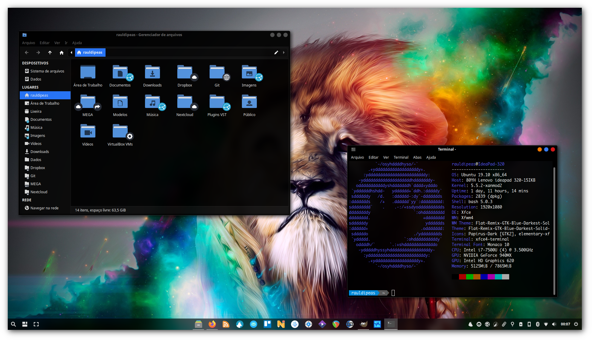Instalação
Você pode seguir a ordem recomendada de execução dos scripts, através do arquivo de pós instalação.
Para uma execução correta dos scripts, você deve copiar e colar uma linha por vez no terminal, para poder acompanhar detalhadamente o processo, dessa forma, qualquer tipo de problema pode ser detectado com maior facilidade.
Porém, se você quiser rodar de forma automatizada, pode instalar o Bashrun, que permite a execução dos scripts ao clicar no botão Run.
Para atualizar os arquivos de configuração do usuário, execute os comandos indicados aqui.
Envolva-se
Crie um fork e envie um pull-request com as suas sugestões de melhorias para este repositório, elas são muito bem vindas!
Acompanhe as atualizações do projeto através do canal no Telegram e do Mastodon.
Acesse o servidor Linux Brasil no Discord e tire todas as suas dúvidas sobre Linux com os demais usuários.
Bashrun
sudo apt install -y dos2unix
sudo wget -O /usr/local/bin/bashrun-url http://my.opendesktop.org/s/Ffio6MqjjRWqajN/download #update-link
sudo wget -O /usr/share/applications/bashrun-url.desktop http://my.opendesktop.org/s/9LpPoETimDd2pNm/download #update-link
sudo chmod +x -v /usr/local/bin/bashrun-url
sudo update-desktop-database
Script de pós instalação do Xubuntu 20.04
- Bash-it (workflow)
- XanMod (workflow)
- ALSA firmware (workflow)
- NVIDIA PPA (extras)
- NVIDIA DRM modeset (workflow)
- GRUB (desktop)
- JACK (studio)
- WINE (studio)
- REAPER (studio)
- ! Resolve (studio)
- OpenShot (studio)
- Blender (studio)
- Gestos (workflow)
- Detecção de palma da mão (workflow)
- Rolagem natural (workflow)
- XCAPE (workflow)
- Rofi (workflow)
- Skippy-XD (workflow)
- Central de notificações (desktop)
- DockbarX (desktop)
- Debs (miscelânea)
- Apt (miscelânea)
- Temas (desktop)
- LightDM webkit2 greeter (desktop)
- OBLogout (desktop)
- Painel (desktop)
- Compton (desktop)
- Lutris (games)
- Waterfox (extras)
- MellowPlayer (extras)
- QOwnNotes (extras)
- Syncthing (extras)
- Google Drive (extras)
- Ícones das pastas (extras)
- X Tile (extras)
- Telegram (extras)
- VSCodium (extras)
- PJeOffice (extras)
- hBlock (extras)
- CleanUp (extras)
Desktop

Apps

Terminal

Arquivos

Bash-it
(Em revisão)
aptupd
sudo apt install -y git fonts-powerline undistract-me
mkdir -pv ~/.fonts
wget -cO ~/.fonts/Monaco-Linux.ttf https://github.com/hbin/top-programming-fonts/raw/master/Monaco-Linux.ttf #update-link
wget -c https://github.com/ryanoasis/nerd-fonts/releases/download/v2.0.0/DroidSansMono.zip #update-link
unzip DroidSansMono.zip -d ~/.fonts
rm -rfv DroidSansMono.zip
fc-cache -fv
git clone --depth=1 https://github.com/Bash-it/bash-it.git ~/.bash_it
bash ~/.bash_it/install.sh --silent
sed -i 's/bobby/powerline/g' ~/.bashrc
echo '
# Undistract-me
. /usr/share/undistract-me/long-running.bash
notify_when_long_running_commands_finish_install' >> ~/.bashrc #manual-cleanup-on-reinstall
echo "
# Autocompletar pelo histórico
bind '\"\\e[A\": history-search-backward'
bind '\"\\e[B\": history-search-forward'" >> ~/.bashrc #manual-cleanup-on-reinstall
sudo sed -i 's/took/levou/g' /usr/share/undistract-me/long-running.bash
sudo sed -i 's/dialog-information/xterm/g' /usr/share/undistract-me/long-running.bash
sudo sed -i 's/Long\ command\ completed/Comando\ concluído\!/g' /usr/share/undistract-me/long-running.bash
echo DPkg::Post-Invoke \{\"sed -i \'s/took/levou/g\' /usr/share/undistract-me/long-running.bash\"\;\}\; | sudo tee /etc/apt/apt.conf.d/100undistract-me
echo DPkg::Post-Invoke \{\"sed -i \'s/dialog-information/xterm/g\' /usr/share/undistract-me/long-running.bash\"\;\}\; | sudo tee -a /etc/apt/apt.conf.d/100undistract-me
echo DPkg::Post-Invoke \{\"sed -i \'s/Long\ command\ completed/Comando\ concluído\!/g\' /usr/share/undistract-me/long-running.bash\"\;\}\; | sudo tee -a /etc/apt/apt.conf.d/100undistract-me
sed -i 's/apt-get/apt/g' ~/.bash_it/aliases/available/apt.aliases.bash
sed -i 's/ -V//g' ~/.bash_it/aliases/available/apt.aliases.bash
sed -i 's/remove --purge/autoremove --purge/g' ~/.bash_it/aliases/available/apt.aliases.bash
mkdir -pv ~/.config/xfce4/terminal
echo '[Configuration]
BackgroundDarkness=0,930000
BackgroundMode=TERMINAL_BACKGROUND_TRANSPARENT
FontName=Monaco 10
DropdownKeepAbove=FALSE
DropdownHeight=70
DropdownWidth=70
DropdownOpacity=90
DropdownStatusIcon=FALSE
MiscDefaultGeometry=100x26
MiscMenubarDefault=FALSE
MiscToolbarDefault=TRUE
ScrollingBar=TERMINAL_SCROLLBAR_NONE
ScrollingOnOutput=FALSE' > ~/.config/xfce4/terminal/terminalrc
xfconf-query -c xfce4-keyboard-shortcuts -np /commands/custom/Insert -s "xfce4-terminal --drop-down" -n -t string
sudo wget -O /usr/local/bin/gef http://my.opendesktop.org/s/LcKks6gNqYXZokA/download #update-link
sudo chmod +x -v /usr/local/bin/gef
exit

APT alias ( execute manualmente ):
bash_it enable alias apt
exit
XanMod
wget https://dl.xanmod.org/xanmod-repository.deb
aptinst ./xanmod-repository.deb
rm -rfv xanmod-repository.deb
aptupd
aptinst -y linux-xanmod-rt-edge
ALSA firmware
wget -c https://www.alsa-project.org/files/pub/firmware/alsa-firmware-1.2.1.tar.bz2 #update-link
tar -xvf alsa-firmware-*.tar.bz2
rm -rfv alsa-firmware-*.tar.bz2
cd alsa-firmware-*
aptinst -y build-essential
./configure --prefix=/usr
sudo make install
cd ..
rm -rfv alsa-firmware-*
NVIDIA PPA
sudo add-apt-repository -y ppa:graphics-drivers/ppa
#echo '# Graphics Drivers
#Package: *
#Pin: release o=LP-PPA-graphics-drivers
#Pin-Priority: 1000' | sudo tee /etc/apt/preferences/graphics-drivers
NVIDIA DRM modeset
echo 'options nvidia_drm modeset=1' | sudo tee /lib/modprobe.d/nvidia-drm-modeset.conf #review
GRUB
sudo sed -i 's/\"quiet splash\"/\"quiet splash loglevel=0 logo.nologo vt.global_cursor_default=0\"/g' /etc/default/grub
echo 'RESUME=none' | sudo tee /etc/initramfs-tools/conf.d/resume
echo 'FRAMEBUFFER=y' | sudo tee /etc/initramfs-tools/conf.d/splash
echo 'kernel.printk = 3 3 3 3' | sudo tee /etc/sysctl.d/20-quiet-printk.conf
sudo update-initramfs -u -k all;sudo update-grub
JACK
sudo usermod -aG audio $USER
sudo usermod -aG video $USER
echo jackd2 jackd/tweak_rt_limits string true | sudo debconf-set-selections
#sudo add-apt-repository ppa:ubuntustudio-ppa/backports
aptinst -y --no-install-recommends ubuntustudio-controls
sudo sed -i 's/256/224/g' /usr/share/ubuntustudio-controls/ubuntustudio-controls.glade
echo DPkg::Post-Invoke \{\"sed -i \'s/256/224/g\' /usr/share/ubuntustudio-controls/ubuntustudio-controls.glade\"\;\}\; | sudo tee /etc/apt/apt.conf.d/100ubuntustudio-controls
mkdir -pv ~/.config/autostart ~/.config/qastools
wget -O ~/.config/qastools/qasmixer.conf http://my.opendesktop.org/s/Cb8QQ9jjk3no52r/download
echo '[Desktop Entry]
Type=Application
Terminal=false
Name=ALSA Restore
Exec=sh -c "sleep 2;alsactl restore --file ~/.config/asound.state"' | tee ~/.config/autostart/alsa-restore.desktop
alsactl store --file ~/.config/asound.state
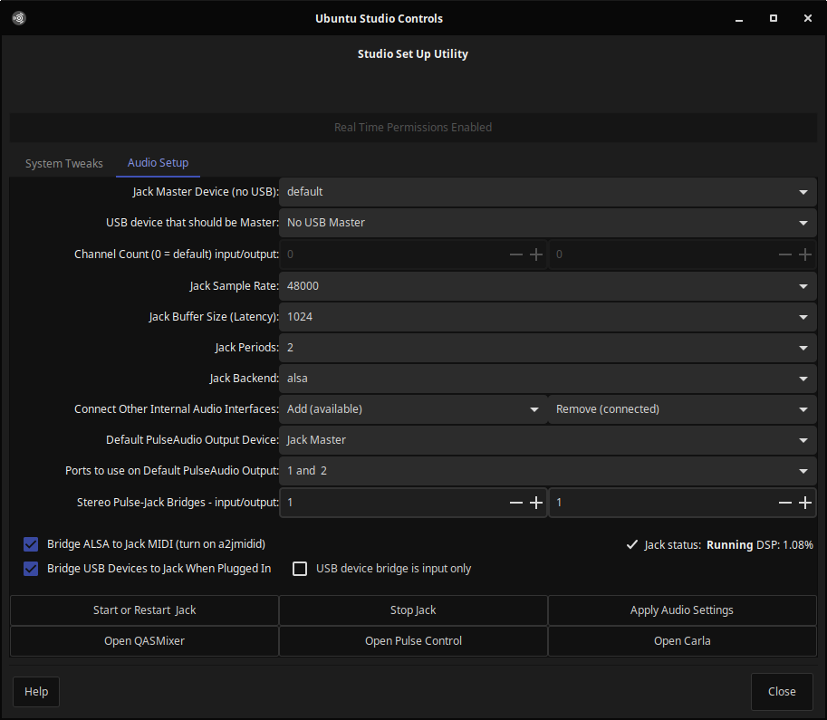
WINE
echo 'deb https://dl.winehq.org/wine-builds/ubuntu/ focal main' | sudo tee /etc/apt/sources.list.d/winehq.list #update-to-focal
wget -O- https://dl.winehq.org/wine-builds/winehq.key | gpg --dearmor | sudo tee /etc/apt/trusted.gpg.d/winehq.gpg
aptupd
aptinst -y q4wine winehq-staging winetricks
echo '
# Wine-RT
STAGING_RT_PRIORITY_SERVER=90
STAGING_RT_PRIORITY_BASE=90
WINE_RT=15
WINE_SRV_RT=10
STAGING_WRITECOPY=1
STAGING_SHARED_MEMORY=1
WINE_ENABLE_PIPE_SYNC_FOR_APP=1' >> ~/.profile #manual-cleanup-on-reinstall
xdg-mime default q4wine.desktop application/x-ms-dos-executable
# winetricks dxvk gdiplus mfc42 vcrun2013 vcrun2019 win10#d2d1
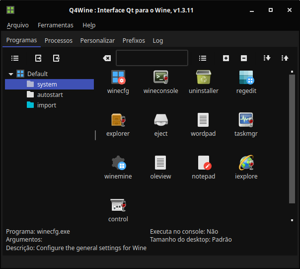
REAPER
wget "https://www.reaper.fm/download.php#linux_download" -O download.php
DEFAULT_PATH="_linux_x86_64.tar.xz"
LINK=$(cat download.php | grep -oP \".*$DEFAULT_PATH\")
LINK="https://www.reaper.fm/"$(echo $LINK | sed 's/[\"]//g')
FILENAME=${LINK##*/}
wget $LINK -O $FILENAME
tar xf $FILENAME -C ~/.local/share/
mkdir -pv ~/.config/REAPER
rm -rfv reaper*.tar.xz download.php
cd ~/.local/share/reaper_linux*
./install-reaper.sh --quiet --integrate-desktop
wget -O ~/.local/share/reaper_linux_x86_64/REAPER/libSwell.colortheme http://my.opendesktop.org/s/D4GcswAieYf6Kfx/download #update-link
wget http://www.sws-extension.org/download/pre-release/sws-2.11.0.0-Linux-x86_64-08d3c6fc.tar.xz #update-link
tar -xvf sws-2.11.0.0-Linux-x86_64-08d3c6fc.tar.xz -C ~/.config/REAPER
rm -rfv sws-2.11.0.0-Linux-x86_64-08d3c6fc.tar.xz
wget -c https://github.com/cfillion/reapack/releases/download/v1.2.1/reaper_reapack64.so -O ~/.config/REAPER/UserPlugins/reaper_reapack64.so #update-link
echo "
Actions=NewProject;ShowAudioConfig;ReaMote;WhatsNew;License;
[Desktop Action NewProject]
Name=REAPER (create new project)
Name[pt_BR]=REAPER (criar novo projeto)
Exec=$HOME/.local/share/reaper_linux_x86_64/REAPER/reaper -new
Icon=cockos-reaper
[Desktop Action ShowAudioConfig]
Name=REAPER (show audio configuration on startup)
Name[pt_BR]=REAPER (mostrar configurações de áudio ao iniciar)
Exec=$HOME/.local/share/reaper_linux_x86_64/REAPER/reaper -audiocfg
Icon=cockos-reaper
[Desktop Action ReaMote]
Name=ReaMote
Exec=$HOME/.local/share/reaper_linux_x86_64/REAPER/reamote-server
Icon=folder-remote
[Desktop Action WhatsNew]
Name=What's new
Name[pt_BR]=O que há de novo?
Exec=xdg-open $HOME/.local/share/reaper_linux_x86_64/REAPER/whatsnew.txt
Icon=text-x-plain
[Desktop Action License]
Name=License and User Agreement
Name[pt_BR]=Licença e contrato de usuário
Exec=xdg-open $HOME/.local/share/reaper_linux_x86_64/REAPER/license.txt
Icon=text-x-plain" | tee -a ~/.local/share/applications/cockos-reaper.desktop
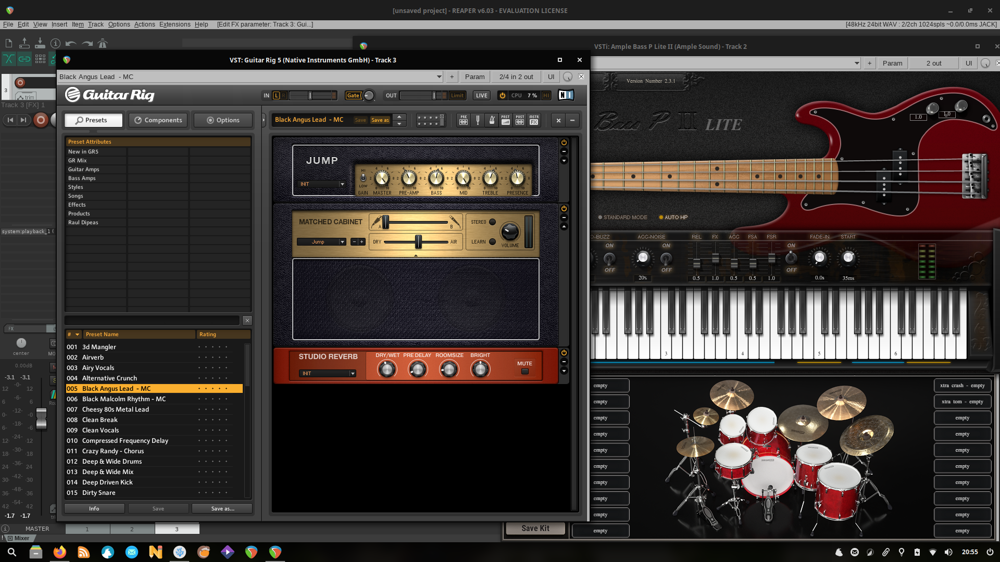
Resolve
aptinst -y gdebi-core ocl-icd-libopencl1 xorriso
mkdir -pv resolve
wget -cO resolve/makeresolvedeb.tar.gz http://www.danieltufvesson.com/download/?file=makeresolvedeb/makeresolvedeb_16.1.2-1.sh.tar.gz
cd resolve
tar -vzxf makeresolvedeb*.tar.gz
sed -i 's/Icon=\/opt\/resolve\/graphics\/DV_Resolve.png/Icon=resolve/g' makeresolvedeb*.sh
sed -i 's/Architecture: amd64/Architecture: amd64\nDepends: ocl-icd-libopencl1\nSection: video/g' makeresolvedeb*.sh
unzip ~/Downloads/DaVinci_Resolve_16.1.2_Linux.zip -d .
./makeresolvedeb*.sh lite
sudo gdebi -n ./davinci-resolve*.deb
mv davinci-resolve*.deb ~/Downloads
rm -rfv resolve
aptpurge -y gdebi-core xorriso
mkdir -pv ~/.config/ffmulticonverter
wget -O ~/.config/ffmulticonverter/presets.xml #update-link
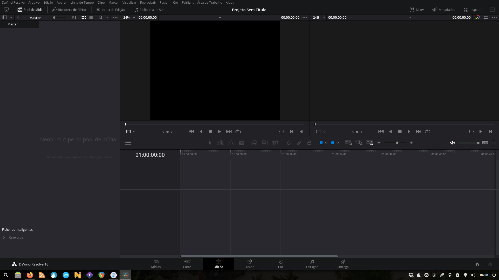
OpenShot
sudo add-apt-repository -y ppa:openshot.developers/libopenshot-daily
aptinst -y openshot-qt
Blender
wget -c https://ftp.nluug.nl/pub/graphics/blender/release/Blender2.82/blender-2.82a-linux64.tar.xz #update-link
tar -xvf blender*.tar.xz
rm -rfv $HOME/.local/share/blender/
mv blender*/ $HOME/.local/share/blender/
rm -rfv blender*.tar.xz
mkdir -pv $HOME/.local/share/applications
cp -rfv $HOME/.local/share/blender/blender.desktop $HOME/.local/share/applications/
sed -i "s/Exec=blender/Exec=.local\/share\/blender\/blender/g" $HOME/.local/share/applications/blender.desktop
Gestos
checkinstall-build
sudo gpasswd -a $USER input
aptinst -y build-essentials libinput-tools
git clone https://github.com/bulletmark/libinput-gestures.git
cd libinput-gestures
sudo make install #checkinstall
libinput-gestures-setup autostart
sed -i 's/NoDisplay/#NoDisplay/g' ~/.config/autostart/libinput-gestures.desktop
aptinst -y python-gobject python3 python3-gi python3-setuptools wmctrl xdotool
git clone https://gitlab.com/cunidev/gestures
cd gestures
sudo python3 setup.py install
cd ../..
sudo rm -rfv libinput-gestures* /usr/share/applications/libinput-gestures.desktop
sudo sed -i 's/org.cunidev.gestures/libinput-gestures/g' /usr/share/applications/org.cunidev.gestures.desktop
mkdir -p ~/.config
wget -O ~/.config/libinput-gestures.conf http://my.opendesktop.org/s/y5PDNkKnNywgxwm/download #update-link
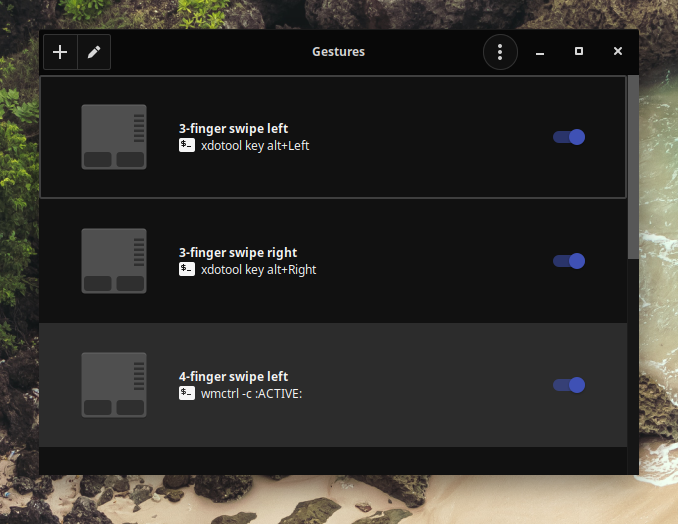
Detecção de palma da mão
mkdir -p ~/.config/autostart
echo '[Desktop Entry]
Encoding=UTF-8
Version=0.9.4
Type=Application
Name=PalmDetection
Exec=sh -c "syndaemon -i 0.1 -KRd"
OnlyShowIn=XFCE;
StartupNotify=false
Terminal=false
Hidden=false
Icon=mouse' | tee ~/.config/autostart/palmdetection.desktop
Rolagem natural
mkdir -pv ~/.config/autostart
echo '[Desktop Entry]
Encoding=UTF-8
Version=0.9.4
Type=Application
Name=NaturalScrolling
Exec=sh -c "synclient VertScrollDelta=-58;synclient HorizScrollDelta=-58"
OnlyShowIn=XFCE;
StartupNotify=false
Terminal=false
Hidden=false
Icon=mouse' | tee ~/.config/autostart/naturalscrolling.desktop
XCAPE
aptinst -y xcape
mkdir -pv ~/.config/autostart
echo '[Desktop Entry]
Exec=xcape -e "Super_L=Super_L|x"
Name=XCAPE
Type=Application
OnlyShowIn=XFCE;' > ~/.config/autostart/xcape.desktop
Rofi
checkinstall-build (check)
checkinstall-build (rofi)
git clone https://github.com/davatorium/rofi
cd rofi
aptinst -y autoconf automake autopoint bison debhelper dh-autoreconf dh-strip-nondeterminism flex gir1.2-harfbuzz-0.0 icu-devtools libbison-dev libcairo-script-interpreter2 libcairo2-dev libfile-stripnondeterminism-perl libgdk-pixbuf2.0-dev libgraphite2-dev libharfbuzz-dev libharfbuzz-gobject0 libice-dev libicu-dev libicu-le-hb-dev libicu-le-hb0 libjpeg-dev libpango1.0-dev libpixman-1-dev libpthread-stubs0-dev librsvg2-dev libsm-dev libstartup-notification0-dev libx11-dev libxau-dev libxcb-ewmh-dev libxcb-icccm4-dev libxcb-randr0-dev libxcb-render0-dev libxcb-shm0-dev libxcb-util-dev libxcb-util0-dev libxcb-xinerama0-dev libxcb-xkb-dev libxcb-xrm-dev libxcb1-dev libxdmcp-dev libxext-dev libxft-dev libxkbcommon-dev libxkbcommon-x11-dev libxrender-dev m4 po-debconf texinfo x11proto-core-dev x11proto-dev x11proto-xext-dev xorg-sgml-doctools xtrans-dev
git clone https://github.com/libcheck/check
cd check
autoreconf -i
./configure
make
sudo make install #checkinstall
cd ..
git submodule update --init
autoreconf -i
./configure
make
sudo make install #checkinstall
aptpurge -y autoconf automake autopoint bison debhelper dh-autoreconf dh-strip-nondeterminism flex gir1.2-harfbuzz-0.0 icu-devtools libbison-dev libcairo-script-interpreter2 libcairo2-dev libfile-stripnondeterminism-perl libgdk-pixbuf2.0-dev libgraphite2-dev libharfbuzz-dev libharfbuzz-gobject0 libice-dev libicu-dev libicu-le-hb-dev libicu-le-hb0 libjpeg-dev libpango1.0-dev libpixman-1-dev libpthread-stubs0-dev librsvg2-dev libsm-dev libstartup-notification0-dev libx11-dev libxau-dev libxcb-ewmh-dev libxcb-icccm4-dev libxcb-randr0-dev libxcb-render0-dev libxcb-shm0-dev libxcb-util-dev libxcb-util0-dev libxcb-xinerama0-dev libxcb-xkb-dev libxcb-xrm-dev libxcb1-dev libxdmcp-dev libxext-dev libxft-dev libxkbcommon-dev libxkbcommon-x11-dev libxrender-dev m4 po-debconf x11proto-core-dev x11proto-dev x11proto-xext-dev xorg-sgml-doctools xtrans-dev libtext-unidecode-perl tex-common texinfo
aptinst -y libxcb-ewmh2 libxcb-xrm0
cd ..
sudo rm -rfv rofi*
mkdir -pv ~/.config/rofi
wget -O ~/.config/rofi/config http://my.opendesktop.org/s/smkePRgsYJSDmCM/download #update-link
wget -O ~/.config/rofi/fullscreen.rasi http://my.opendesktop.org/s/jzSpr9PYXYmQR2G/download #update-link
wget -O ~/.config/rofi/sidebar.rasi http://my.opendesktop.org/s/K4QbRoyZDJ2g9wF/download #update-link
xfconf-query -c xfce4-keyboard-shortcuts -np /commands/custom/"<Super>"x -s "rofi -show drun" -n -t string
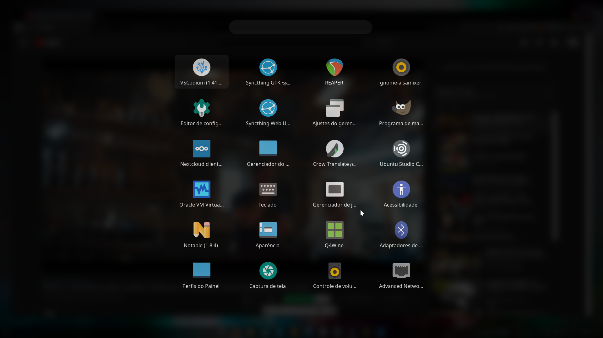 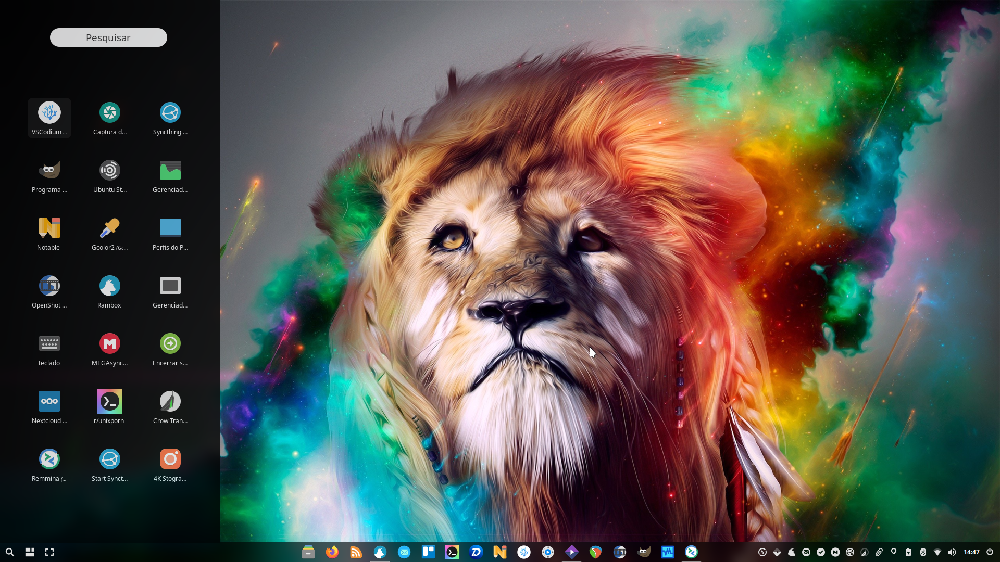
Skippy-XD
checkinstall-build
aptinst -y libimlib2-dev libfontconfig1-dev libfreetype6-dev libx11-dev libxext-dev libxft-dev libxrender-dev zlib1g-dev libxinerama-dev libxcomposite-dev libxdamage-dev libxfixes-dev libxmu-dev
git clone https://github.com/dreamcat4/skippy-xd.git
cd skippy-xd
make
sudo make install #checkinstall
aptpurge -y autoconf automake bzip2-doc libbz2-dev libexpat1-dev libfontconfig1-dev libfreetype-dev libfreetype6-dev libgif-dev libice-dev libid3tag0-dev libimlib2-dev libjbig-dev libjpeg-dev libjpeg-turbo8-dev libjpeg8-dev libltdl-dev liblzma-dev libpng-dev libpng-tools libpthread-stubs0-dev libsigsegv2 libsm-dev libtiff-dev libtiffxx5 libwebp-dev libx11-dev libxau-dev libxcb1-dev libxcomposite-dev libxdamage-dev libxdmcp-dev libxext-dev libxfixes-dev libxft-dev libxinerama-dev libxmu-dev libxmu-headers libxrender-dev libxt-dev m4 uuid-dev x11proto-core-dev x11proto-dev x11proto-xext-dev x11proto-xinerama-dev xorg-sgml-doctools xtrans-dev
cd ..
sudo rm -rfv skippy-xd*
mkdir -pv ~/.config/skippy-xd
wget -O ~/.config/skippy-xd/skippy-xd.rc http://my.opendesktop.org/s/3B4wix3bTdLCzJL/download #update-link
gef http://my.opendesktop.org/s/d7AS8ndgeqn38XG/download /usr/local/bin/skippy-xd-fix #update-link
xfconf-query -c xfce4-keyboard-shortcuts -np /commands/custom/"<Super>"s -s "skippy-xd-fix" -n -t string
Linux notification center
gef https://github.com/phuhl/linux_notification_center/releases/download/1.7.2/deadd-notification-center /usr/local/bin/deadd-notification-center #update-link
sudo chmod -x -v /usr/lib/x86_64-linux-gnu/xfce4/notifyd/xfce4-notifyd
mkdir -pv ~/.config/autostart ~/.config/deadd
wget -O ~/.config/autostart/linux-notification-center-start.desktop http://my.opendesktop.org/s/7cMHm7f5XtJbcRq/download #update-link
wget -O ~/.config/deadd/deadd.conf http://my.opendesktop.org/s/RQk9oJDzgrAk7RZ/download #update-link
xfconf-query -c xfce4-keyboard-shortcuts -np /commands/custom/"<Super>"n -s 'sh -c "kill -s USR1 $(pidof deadd-notification-center)"' -n -t string
DockbarX
sudo add-apt-repository -y ppa:xuzhen666/dockbarx
aptinst -y --no-install-recommends xfce4-dockbarx-plugin
aptinst -y dconf-cli
git clone https://github.com/Xseba360/DockBarX-Windows10
cd DockBarX-Windows10
sed -i 's/-16/-10/g' config
sudo tar -czf /usr/share/dockbarx/themes/win10.tar.gz pixmaps info config
cd ..
rm -rfv DockBarX-Windows10
wget -O dockbarx.dconf http://my.opendesktop.org/s/iwJdspdZ6A8NwPL/download #update-link
dconf load /org/dockbarx/ < dockbarx.dconf
rm -rfv dockbarx.dconf
xfconf-query --reset --channel xfce4-keyboard-shortcuts --property /commands/custom/"<Super>"1
xfconf-query --reset --channel xfce4-keyboard-shortcuts --property /commands/custom/"<Super>"2
xfconf-query --reset --channel xfce4-keyboard-shortcuts --property /commands/custom/"<Super>"3
xfconf-query --reset --channel xfce4-keyboard-shortcuts --property /commands/custom/"<Super>"4

Debs
- 4kVideoDownloader #login
# settings-4k.md sudo sed -i 's/.png//g' /usr/share/applications/4k*
- 4kStogram #login
# settings-4k.md sudo sed -i 's/.png//g' /usr/share/applications/4k*
- AppImageLauncher
# settings-appimagelauncher.md echo "[AppImageLauncher] ask_to_move=true destination=$HOME/.local/bin enable_daemon=true [appimagelauncherd] %23%20additional_directories_to_watch=~/otherApplications:/even/more/applications %23%20monitor_mounted_filesystems=false" > ~/.config/appimagelauncher.cfg
- Bitwarden #login
- Crow translate
- Discord #direct-link #login
# settings-discord.md gtk-launch discord.desktop sleep 5 killall -9 Discord aptinst -y npm sudo npm install -g asar asar e $HOME/.config/discord/0.0.10/modules/discord_desktop_core/core.asar $HOME/.config/discord/0.0.10/modules/discord_desktop_core/core rsvg-convert -w 24 -h 24 -f png -a /usr/share/icons/Papirus/24x24/panel/discord-tray.svg > $HOME/.config/discord/0.0.10/modules/discord_desktop_core/core/app/images/systemtray/linux/tray.png rsvg-convert -w 24 -h 24 -f png -a /usr/share/icons/Papirus/24x24/panel/discord-tray-unread.svg > $HOME/.config/discord/0.0.10/modules/discord_desktop_core/core/app/images/systemtray/linux/tray-unread.png asar p $HOME/.config/discord/0.0.10/modules/discord_desktop_core/core $HOME/.config/discord/0.0.10/modules/discord_desktop_core/core.asar rm -rfv $HOME/.config/discord/0.0.10/modules/discord_desktop_core/core
- Dropbox #login #sync-files
- GColor2 #direct-link
# settings-gcolor2.md sudo sed -i 's/\/usr\/share\/pixmaps\/gcolor2\/gcolor2.xpm/gcolor2/g' /usr/share/applications/gcolor2.desktop
- GIMP Python #direct-link
# settings-gimp-python.md wget -O instagram.zip http://my.opendesktop.org/s/7GkdSTiwAPXg53t/download #update-link mkdir -pv ~/.config/GIMP/2.10/plug-ins unzip instagram.zip -d ~/.config/GIMP/2.10/plug-ins/ rm -rfv instagram.zip
- GitKraken #login
# settings-gitkraken.md sudo sed -i 's/\/usr\/share\/pixmaps\/gitkraken.png/gitkraken/g' /usr/share/applications/gitkraken.desktop
- Ksnip
# settings-ksnip.md mkdir -pv ~/.config/ksnip echo "[Application] AlwaysCopyToClipboard=true ApplicationStyle=gtk2 PromptSaveBeforeExit=false UseTrayIcon=false [Painter] NumberFont=@Variant(\0\0\0@\0\0\0\x14\0Z\0\x30\0\x30\0\x33\0 \0[\0u\0r\0w\0]@>\0\0\0\0\0\0\xff\xff\xff\xff\x5\x1\0K\x10) TextFont=@Variant(\0\0\0@\0\0\0\x12\0N\0o\0t\0o\0 \0S\0\x61\0n\0s@(\0\0\0\0\0\0\xff\xff\xff\xff\x5\x1\0\x32\x10)" > ~/.config/ksnip/ksnip.conf xfconf-query -c xfce4-keyboard-shortcuts -np /commands/custom/"<Alt>"Print -s "ksnip -a" -n -t string xfconf-query -c xfce4-keyboard-shortcuts -np /commands/custom/"<Shift>"Print -s "ksnip -r" -n -t string xfconf-query -c xfce4-keyboard-shortcuts -np /commands/custom/Print -s "ksnip -f" -n -t string
- Megasync #login #sync_files
- Min
- NoMachine #dark-theme
- Patchage #direct-link
--no-install-recommends
- Rambox #custom CSS #login #sync_accounts
# settings-rambox.md aptinst -y npm sudo npm install -g asar asar e /opt/Rambox/resources/app.asar app echo ' /** * Dark background */ .x-tab { background-color: #000000 } .x-tab:hover { background-color: #090909 } .x-tab-bar-body { background-color: #000000 } .x-tab.x-tab-active.x-tab-default { border-color: white; background-color: #090909 }' >> app/resources/Rambox-all.css asar p app app.asar sudo cp -rfv app.asar /opt/Rambox/resources/app.asar rm -rfv app app.asar xfconf-query -c xfce4-keyboard-shortcuts -np /commands/custom/XF86Messenger -s "rambox" -n -t string
- Remember The Milk #login
- Send Anywhere #login
- Skype #login
- Stremio
--no-install-recommends#login - ToneLib GFX #direct-link
- ToneLib ZOOM
- UNetbootin #direct-link
Apt
- Analisador de uso de discos
- DebOrphan
- Deluge-gtk #close-to-tray
- Discos
- Dropbear
- FeedReader #login (Feedly)
- Font Manager
- GDebI
--no-install-recommends# settings-gdebi.md sudo sed -i 's/gdebi-gtk %f/sh -c "gdebi-gtk %f"/g' /usr/share/applications/gdebi.desktop echo DPkg::Post-Invoke \{\"wget -qO /usr/share/applications/gdebi.desktop http://my.opendesktop.org/s/FiZyQR6JYNo8cSr/download\"\;\}\; | sudo tee /etc/apt/apt.conf.d/100gdebi xdg-mime default gdebi.desktop application/vnd.debian.binary-package
- Geary #login (Mail/Outlook)
- GNOME characters
--no-install-recommends - Fonts EmojiOne
- GNOME system log
- Inkscape
--no-install-recommends - MediaInfo GUI
- Meld
- MPlayer
# settings-smplayer.md mkdir -pv ~/.config/smplayer echo '2345 [gui] iconset=PapirusDark qt_style=qt5ct-style [subtitles] styles\fontname=Sans Serif styles\primarycolor\argb=fffff100' > ~/.config/smplayer/smplayer.ini xdg-mime default smplayer.desktop video/mp4 xdg-mime default smplayer.desktop video/quicktime xdg-mime default smplayer.desktop video/webm xdg-mime default smplayer.desktop video/x-matroska xfconf-query -c xfce4-keyboard-shortcuts -np /commands/custom/XF86Music -s "smplayer" -n -t string
- Neofetch #ascii-logo (Xubuntu)
- Nextcloud #login #sync-files
- RAR
- Redshift-gtk
- Restic #backup-script
- Rygel #review
- Steam #login #sync_files
- Synaptic
- Thunar Dropbox #review
- Thunar Megasync #review
- Thunar VCS #review
- Vokoscreen
- VolumeIcon ALSA
# settings-volumeicon-alsa.md mkdir -pv ~/.config/autostart ~/.config/volumeicon echo '[Desktop Entry] Type=Application Name=Volume Icon Exec=volumeicon NoDisplay=false OnlyShowIn=XFCE;' > ~/.config/autostart/volumeicon.desktop wget -O ~/.config/volumeicon/volumeicon http://my.opendesktop.org/index.php/s/tw8kNw3pjdQbfwB/download #update-link
Temas
sudo add-apt-repository -yn ppa:papirus/hardcode-tray
sudo add-apt-repository -yn ppa:papirus/papirus-dev
sudo add-apt-repository -yn ppa:tista/plata-theme
sudo add-apt-repository -y ppa:daniruiz/flat-remix
aptinst -y breeze-cursor-theme flat-remix-gtk hardcode-tray papirus-icon-theme plata-theme plymouth-theme-spinner qt5ct qt5-style-plugins
sudo sed -i 's/Icon\[pt_BR\]/#Icon\[pt_BR\]/g' /usr/share/applications/mate-calc.desktop
wget -O mousepad.dconf http://my.opendesktop.org/s/St7tgafok4Nr5q4/download
dconf load /org/xfce/mousepad/ < mousepad.dconf
rm -rfv mousepad.dconf
xfconf-query -c thunar -np /last-location-bar -t string -s ThunarLocationButtons
xfconf-query -c thunar -np /last-window-height -t int -s 586
xfconf-query -c thunar -np /last-window-width -t int -s 900
xfconf-query -c xfce4-appfinder -np /always-center -t bool -s true
xfconf-query -c xfce4-appfinder -np /category-icon-size -t int -s 2
xfconf-query -c xfce4-appfinder -np /icon-view -t bool -s true
xfconf-query -c xfce4-appfinder -np /item-icon-size -t int -s 4
xfconf-query -c xfce4-appfinder -np /last/window-height -t int -s 5000
xfconf-query -c xfce4-appfinder -np /last/window-width -t int -s 5000
xfconf-query -c xfce4-desktop -np /desktop-icons/file-icons/show-filesystem -t bool -s false
xfconf-query -c xfce4-desktop -np /desktop-icons/file-icons/show-home -t bool -s false
xfconf-query -c xfce4-desktop -np /desktop-icons/file-icons/show-removable -t bool -s false
xfconf-query -c xfce4-desktop -np /desktop-icons/file-icons/show-trash -t bool -s false
xfconf-query -c xfce4-notifyd -np /theme -t string -s Plata
xfconf-query -c xfce4-power-manager -np /xfce4-power-manager/show-tray-icon -t bool -s true
xfconf-query -c xfwm4 -np /general/button_layout -t string -s "|HMC"
xfconf-query -c xfwm4 -np /general/cycle_draw_frame -t bool -s false
xfconf-query -c xfwm4 -np /general/placement_ratio -t int -s 100
xfconf-query -c xfwm4 -np /general/easy_click -t string -s Super
xfconf-query -c xfwm4 -np /general/theme -s Plata-Noir
xfconf-query -c xfwm4 -np /general/workspace_count -t int -s 1
xfconf-query -c xsettings -np /Gtk/CursorThemeName -s Breeze_Snow
xfconf-query -c xsettings -np /Gtk/MonospaceFontName -s 'Monaco 10'
xfconf-query -c xsettings -np /Net/IconThemeName -s Papirus-Dark
xfconf-query -c xsettings -np /Net/ThemeName -s Plata-Noir
sudo update-alternatives --set x-cursor-theme /etc/X11/cursors/Breeze_Snow.theme
sudo update-alternatives --set default.plymouth /usr/share/plymouth/themes/bgrt/bgrt.plymouth
sed -i 's/elementary/colibre/g' ~/.config/libreoffice/4/user/registrymodifications.xcu
echo '{
"blacklist": ["steam"],
"icons": {
"size": 24
},
"backup_ignore": true
}' > ~/.config/hardcode-tray.json
sudo hardcode-tray --apply
sudo sed -i 's/export QT/#export QT/g' /etc/X11/Xsession.d/56xubuntu-session
mkdir -pv ~/.config/qt5ct
echo '[Appearance]
icon_theme=Papirus-Dark
style=gtk2
[Fonts]
fixed=@Variant(\0\0\0@\0\0\0\f\0M\0o\0n\0\x61\0\x63\0o@$\0\0\0\0\0\0\xff\xff\xff\xff\x5\x1\0\x32\x10)
general=@Variant(\0\0\0@\0\0\0\x12\0N\0o\0t\0o\0 \0S\0\x61\0n\0s@\"\0\0\0\0\0\0\xff\xff\xff\xff\x5\x1\0\x32\x10)' > ~/.config/qt5ct/qt5ct.conf
echo '[greeter]
background = /usr/share/xfce4/backdrops/xubuntu-zesty.png
theme-name = Plata-Noir
icon-theme-name = Papirus-Dark' | sudo tee /etc/lightdm/lightdm-gtk-greeter.conf
sudo wget -O /usr/share/plymouth/themes/xubuntu-logo/logo.png http://my.opendesktop.org/s/7cJJBjzN3Zdi8zr/download #update-link
sudo update-initramfs -u -k all
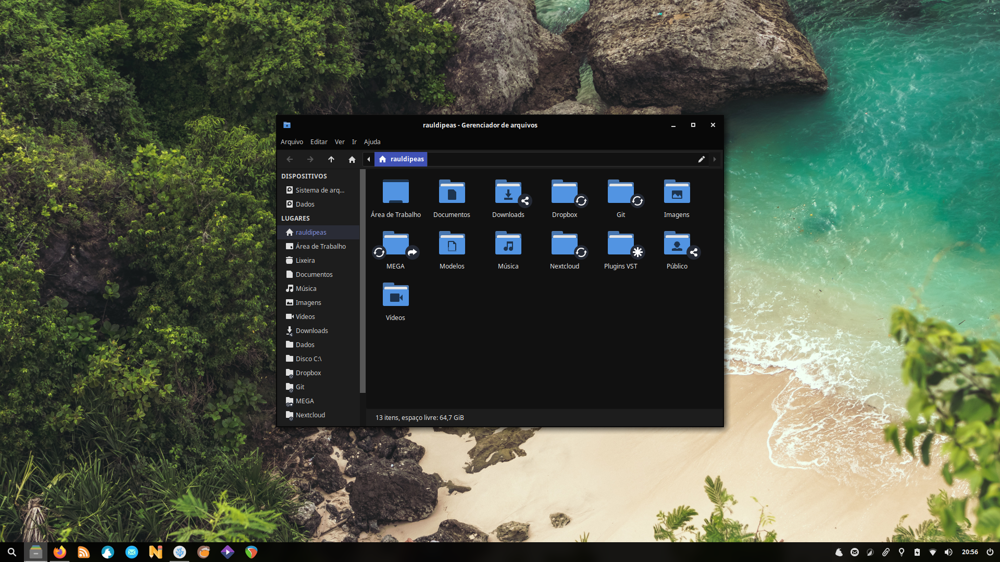
LightDM webkit2 greeter
wget -c https://provo-mirror.opensuse.org/repositories/home:/antergos/xUbuntu_17.10/amd64/lightdm-webkit2-greeter_2.2.5-1+15.31_amd64.deb #update-link
aptinst ./lightdm-webkit2-greeter*.deb
rm -rfv lightdm-webkit2-greeter*.deb
wget -c https://github.com/Litarvan/lightdm-webkit-theme-litarvan/releases/download/v3.1.0/lightdm-webkit-theme-litarvan-3.1.0.tar.gz #update-link
sudo mkdir -pv /usr/share/lightdm-webkit/themes/litarvan
sudo tar -vzxf lightdm-webkit-theme-litarvan*.tar.gz -C /usr/share/lightdm-webkit/themes/litarvan
rm -rfv lightdm-webkit-theme-litarvan*.tar.gz
echo '[Seat:*]
greeter-session=lightdm-webkit2-greeter' | sudo tee /etc/lightdm/lightdm.conf.d/50-lightdm-webkit2-greeter.conf
sudo sed -i 's/antergos/litarvan/g' /etc/lightdm/lightdm-webkit2-greeter.conf
OBLogout
wget -O oblogout.zip http://my.opendesktop.org/s/c2WoBsQBpsSawW6/download
unzip oblogout.zip
aptinst -y --no-install-recommends ./oblogout*.deb ./python-gtk2*.deb ./python-imaging*.deb
rm -rfv oblogout.zip oblogout*.deb python-gtk2*.deb python-imaging*.deb
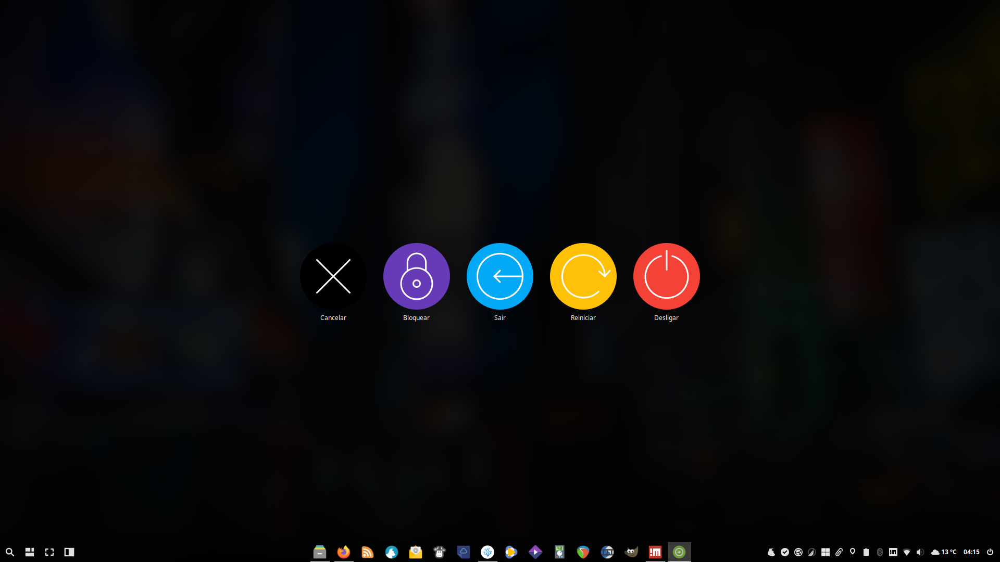
Painel
aptinst -y tint2 xdotool
mkdir -pv ~/.config/autostart ~/.config/tint2 ~/.local/share/applications ~/.local/share/scripts ~/.local/share/xfce4-panel-profiles
wget -O ~/.config/autostart/tint2-panel-auto-opaque.desktop http://my.opendesktop.org/s/2RsfZMzP3rWx8Q8/download #update-link
wget -O ~/.local/share/applications/tint2-panel-auto-opaque.desktop http://my.opendesktop.org/s/2RsfZMzP3rWx8Q8/download #update-link
sed -i 's/false/true/g' ~/.local/share/applications/tint2-panel-auto-opaque.desktop
wget -O ~/.config/autostart/tint2.desktop http://my.opendesktop.org/s/2xX5W3pDadnaN8C/download #update-link
wget -O ~/.config/tint2/tint2rc http://my.opendesktop.org/s/EGoHb5XDttH4DLr/download #update-link
wget -O ~/.local/share/scripts/tint2-panel-auto-opaque.sh http://my.opendesktop.org/s/rQJWi764p7FxXoj/download #update-link
wget -O Clima.zip http://my.opendesktop.org/s/B8wKfKsNEJN3dGe/download #update-link
unzip Clima.zip
sudo cp -rfv 20190419/Clima* /usr/share/xfce4/weather/icons/
rm -rfv Clima.zip 20190419
wget -O ~/.config/xfce4/panel/weather-8.rc http://my.opendesktop.org/s/77x94myzedArZit/download #update-link
wget -O ~/.local/share/xfce4-panel-profiles/Raul\ Dipeas.tar.bz2 http://my.opendesktop.org/s/DerCwxX84qstx7n/download #update-link
xfce4-panel-profiles load ~/.local/share/xfce4-panel-profiles/Raul\ Dipeas.tar.bz2
gtk-launch tint2.desktop
gtk-launch tint2-panel-auto-opaque.desktop
Compton
checkinstall-build
git clone https://github.com/tryone144/compton
cd compton
aptinst -y libx11-dev libxcomposite-dev libxdamage-dev libxrender-dev libxrandr-dev libxinerama-dev libconfig-dev libdbus-1-dev libdrm-dev libgl1-mesa-dev libpcre3-dev
make
aptinst -y --no-install-recommends asciidoc docbook-xml xsltproc xmlto
make docs
sudo make install #checkinstall
cd ..
rm -rfv compton
aptinst -y libconfig9
aptpurge -y libpthread-stubs0-dev libx11-dev libx11-doc libxau-dev libxcb1-dev libxdmcp-dev x11proto-core-dev x11proto-dev xorg-sgml-doctools xtrans-dev libxcomposite-dev libxext-dev libxfixes-dev x11proto-composite-dev x11proto-fixes-dev x11proto-xext-dev libxdamage-dev x11proto-damage-dev libxrender-dev libxrandr-dev x11proto-randr-dev libxinerama-dev x11proto-xinerama-dev libconfig-dev libconfig-doc libdbus-1-dev libdrm-dev libgl1-mesa-dev libgles1 libglvnd-core-dev libglvnd-dev libopengl0 libx11-xcb-dev libxcb-dri2-0-dev libxcb-dri3-dev libxcb-glx0-dev libxcb-present-dev libxcb-randr0-dev libxcb-render0-dev libxcb-shape0-dev libxcb-sync-dev libxcb-xfixes0-dev libxshmfence-dev libxxf86vm-dev mesa-common-dev x11proto-xf86vidmode-dev libpcre16-3 libpcre3-dev libpcre32-3 libpcrecpp0v5 asciidoc asciidoc-base asciidoc-common libxml2-utils xsltproc asciidoc asciidoc-base asciidoc-common docbook-xsl xmlto
cp /usr/share/applications/compton.desktop ~/.config/autostart/
echo 'OnlyShowIn=XFCE;' >> ~/.config/autostart/compton.desktop
sed -i 's/TryExec/#TryExec/g' ~/.config/autostart/compton.desktop
wget -O ~/.config/compton.conf http://my.opendesktop.org/index.php/s/SpcapKgySxmHmzG/download #update-link
xfconf-query -c xfwm4 -np /general/use_compositing -T false
gtk-launch compton.desktop
Lutris
sudo add-apt-repository -y ppa:lutris-team/lutris
aptinst -y libvulkan1:i386 lutris
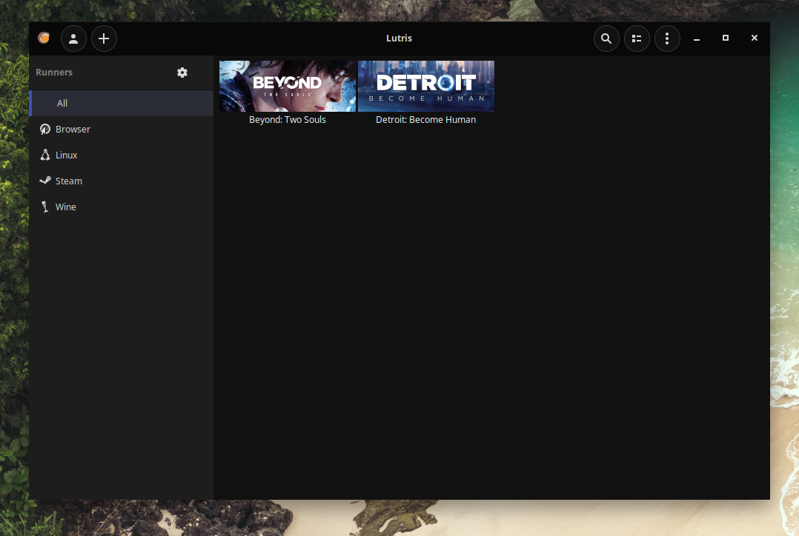
Waterfox
echo 'deb http://download.opensuse.org/repositories/home:/hawkeye116477:/waterfox/xUbuntu_20.04/ /' | sudo tee /etc/apt/sources.list.d/waterfox.list
wget -O- https://download.opensuse.org/repositories/home:hawkeye116477:waterfox/xUbuntu_20.04/Release.key | gpg --dearmor | sudo tee /etc/apt/trusted.gpg.d/waterfox.gpg
aptupd
aptinst -y waterfox-current-i18n-pt-br waterfox-current-kpe
gtk-launch waterfox-current.desktop
sleep 5
killall -9 waterfox-current
cd ~/.waterfox/*-edition-default/
mkdir -pv chrome
cd chrome
git clone https://github.com/rauldipeas/waterfox-flat-remix
[[ -s userChrome.css ]] || echo >> userChrome.css
sed -i '1s/^/@import "waterfox-flat-remix\/userChrome.css";\n/' userChrome.css
ln -s chrome/waterfox-flat-remix/configuration/user.js ../user.js
Abra o painel de customização do Waterfox e mova o botão de nova aba para a headerbar.
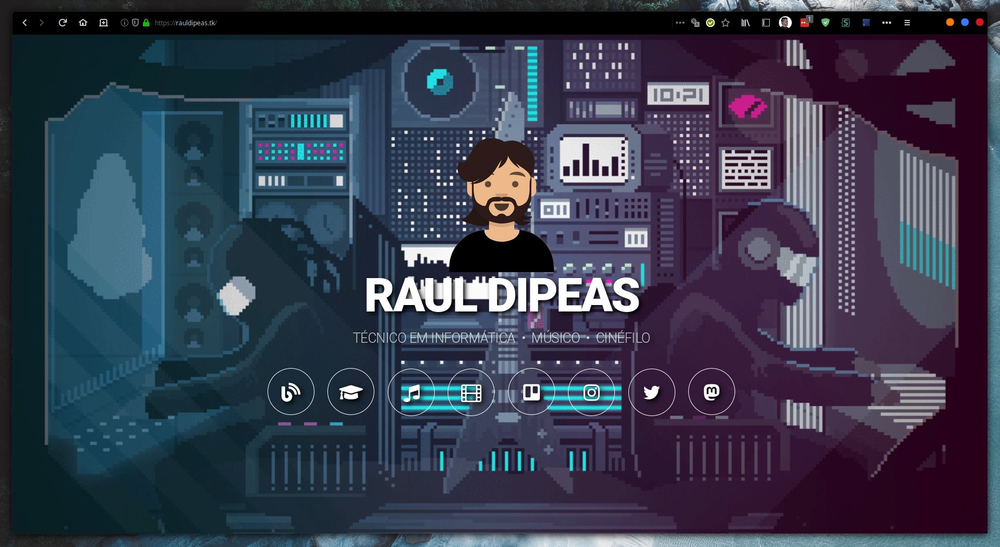
MellowPlayer
echo 'deb http://download.opensuse.org/repositories/home:/ColinDuquesnoy/xUbuntu_20.04/ /' | sudo tee /etc/apt/sources.list.d/mellowplayer.list
wget -O- https://download.opensuse.org/repositories/home:ColinDuquesnoy/xUbuntu_20.04/Release.key | gpg --dearmor | sudo tee /etc/apt/trusted.gpg.d/mellowplayer.gpg
aptupd
aptinst -y mellowplayer playerctl
xfconf-query -c xfce4-keyboard-shortcuts -np /commands/custom/XF86AudioPlay -s "playerctl play-pause" -n -t string
xfconf-query -c xfce4-keyboard-shortcuts -np /commands/custom/XF86AudioNext -s "playerctl next" -n -t string
xfconf-query -c xfce4-keyboard-shortcuts -np /commands/custom/XF86AudioPrev -s "playerctl previous" -n -t string
xfconf-query -c xfce4-keyboard-shortcuts -np /commands/custom/"<Shift>"AudioNext -s "playerctl selection 1+" -n -t string
xfconf-query -c xfce4-keyboard-shortcuts -np /commands/custom/"<Shift>"AudioPrev -s "playerctl selection 1-" -n -t string
mkdir -pv ~/.config/MellowPlayer
echo '[appearance]
custom-tray-icon=/usr/share/icons/Papirus/24x24/panel/mellowplayer-panel.svg
show-tray-icon=true
theme=Default
[main]
close-to-tray=true' > ~/.config/MelloyPlayer/MellowPlayer3.conf
QOwnNotes
sudo add-apt-repository -y ppa:pbek/qownnotes
aptinst -y qownnotes
Syncthing
echo "deb https://apt.syncthing.net/ syncthing stable" | sudo tee /etc/apt/sources.list.d/syncthing.list
wget -O- https://syncthing.net/release-key.txt | gpg --dearmor | sudo tee /etc/apt/trusted.gpg.d/syncthing.gpg
aptupd
aptinst -y syncthing-gtk
Google Drive
sudo add-apt-repository -y ppa:alessandro-strada/ppa
aptinst -y google-drive-ocamlfuse
mkdir -pv ~/Google\ Drive
sudo mkdir -pv /usr/local/bin
sudo wget -O /usr/share/applications/google-drive.desktop http://my.opendesktop.org/s/L234JfnxHwZRSML/download #update-link
gef http://my.opendesktop.org/s/F2bd4As8LKgMcEL/download /usr/local/bin/google-drive.sh #update-link
google-drive-ocamlfuse ~/Google\ Drive
Ícones de pasta
aptinst -y librsvg2-bin
sudo wget -O /usr/share/thumbnailers/folder.thumbnailer http://my.opendesktop.org/s/72T6aimS5dWikL6/download #update-link
gef http://my.opendesktop.org/s/jbtRBMTc2bJeFAQ/download /usr/bin/folder-thumbnailer #update-link
mkdir -pv ~/.config/Thunar
wget -O ~/.config/Thunar/uca.xml http://my.opendesktop.org/s/887f3rPPZyAbqLs/download #update-link

X Tile
sudo add-apt-repository -y ppa:giuspen/ppa
aptinst -y x-tile
sudo hardcode-tray --apply --only x-tile --size 16
mkdir -pv ~/.config/autostart ~/.config/x-tile
cp -rfv /usr/share/applications/x-tile.desktop ~/.config/autostart
wget -O ~/.config/x-tile/-apps-x-tile-0-not_minimized http://my.opendesktop.org/s/NtPY3D3kfGkC8ZN/download
wget -O ~/.config/x-tile/-apps-x-tile-0-only_curr_desk http://my.opendesktop.org/s/XtWXgzxDtRWmGQJ/download
wget -O ~/.config/x-tile/-apps-x-tile-0-systray_enable http://my.opendesktop.org/s/Ck4gqzNngpmqY6z/download
wget -O ~/.config/x-tile/-apps-x-tile-0-systray_start http://my.opendesktop.org/s/RkSrKqgm6LZqAyZ/download
Telegram
wget -O telegram.tar.xz https://telegram.org/dl/desktop/linux
tar -xvf telegram.tar.xz -C $HOME/.local/share/
rm -rfv telegram.tar.xz
$HOME/.local/share/Telegram/Telegram 2&1> /dev/null
VSCodium
wget -O- https://gitlab.com/paulcarroty/vscodium-deb-rpm-repo/raw/master/pub.gpg | gpg --dearmor | sudo tee /etc/apt/trusted.gpg.d/vscodium.gpg
echo 'deb https://gitlab.com/paulcarroty/vscodium-deb-rpm-repo/raw/repos/debs/ vscodium main' | sudo tee /etc/apt/sources.list.d/vscodium.list
aptupd
aptinst -y codium
xdg-mime default thunar.desktop inode/directory
PJe Office
wget -O PJe.zip http://my.opendesktop.org/s/2a65eG4rqf3oLSP/download
unzip PJe.zip
aptinst -y ./*.deb
sudo cp pje-office.desktop /usr/share/applications/pje-office.desktop
rm -rfv *.deb *.desktop *.zip
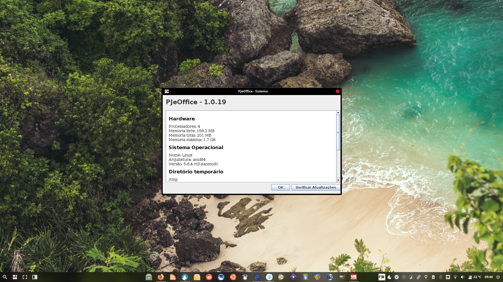
hBlock
sudo mkdir -pv /usr/local/bin
gef https://raw.githubusercontent.com/hectorm/hblock/v2.1.6/hblock /usr/local/bin/hblock
hblock
CleanUp
aptpurge -y \
gnome-font-viewer \
gnome-mines \
gnome-sudoku \
parole \
pidgin \
pidgin-data \
pidgin-otr \
sgt-launcher \
sgt-puzzles \
transmission-common \
transmission-gtk \
thunderbird \
thunderbird-locale-en \
thunderbird-locale-en-us \
thunderbird-locale-pt \
thunderbird-locale-pt-br \
xfburn \
xfce4-notes \
xfce4-notes-plugin \
xfce4-screenshooter
Gestures
wget -O ~/.config/libinput-gestures.conf http://my.opendesktop.org/s/y5PDNkKnNywgxwm/download #update-link
Rofi
wget -O ~/.config/rofi/config http://my.opendesktop.org/s/smkePRgsYJSDmCM/download #update-link
wget -O ~/.config/rofi/fullscreen.rasi http://my.opendesktop.org/s/jzSpr9PYXYmQR2G/download #update-link
wget -O ~/.config/rofi/sidebar.rasi http://my.opendesktop.org/s/K4QbRoyZDJ2g9wF/download #update-link
Skippy-XD
wget -O ~/.config/skippy-xd/skippy-xd.rc http://my.opendesktop.org/s/3B4wix3bTdLCzJL/download #update-link
Linux Notification Center
wget -O ~/.config/deadd/deadd.conf http://my.opendesktop.org/s/RQk9oJDzgrAk7RZ/download #update-link
VolumeIcon ALSA
wget -O ~/.config/volumeicon/volumeicon http://my.opendesktop.org/index.php/s/tw8kNw3pjdQbfwB/download #update-link
Panel
wget -O ~/.config/tint2/tint2rc http://my.opendesktop.org/s/EGoHb5XDttH4DLr/download #update-link
wget -O ~/.config/xfce4/panel/weather-8.rc http://my.opendesktop.org/s/77x94myzedArZit/download #update-link
wget -O ~/.local/share/xfce4-panel-profiles/Raul\ Dipeas.tar.bz2 http://my.opendesktop.org/s/DerCwxX84qstx7n/download #update-link
xfce4-panel-profiles load ~/.local/share/xfce4-panel-profiles/Raul\ Dipeas.tar.bz2
Compton
wget -O ~/.config/compton.conf http://my.opendesktop.org/index.php/s/SpcapKgySxmHmzG/download #update-link
X Tile
wget -O ~/.config/x-tile/-apps-x-tile-0-not_minimized http://my.opendesktop.org/s/NtPY3D3kfGkC8ZN/download #update-link
wget -O ~/.config/x-tile/-apps-x-tile-0-only_curr_desk http://my.opendesktop.org/s/XtWXgzxDtRWmGQJ/download #update-link
wget -O ~/.config/x-tile/-apps-x-tile-0-systray_enable http://my.opendesktop.org/s/Ck4gqzNngpmqY6z/download #update-link
wget -O ~/.config/x-tile/-apps-x-tile-0-systray_start http://my.opendesktop.org/s/RkSrKqgm6LZqAyZ/download #update-link